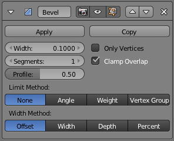
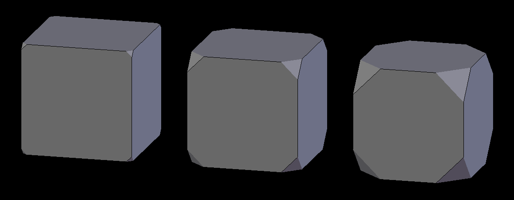
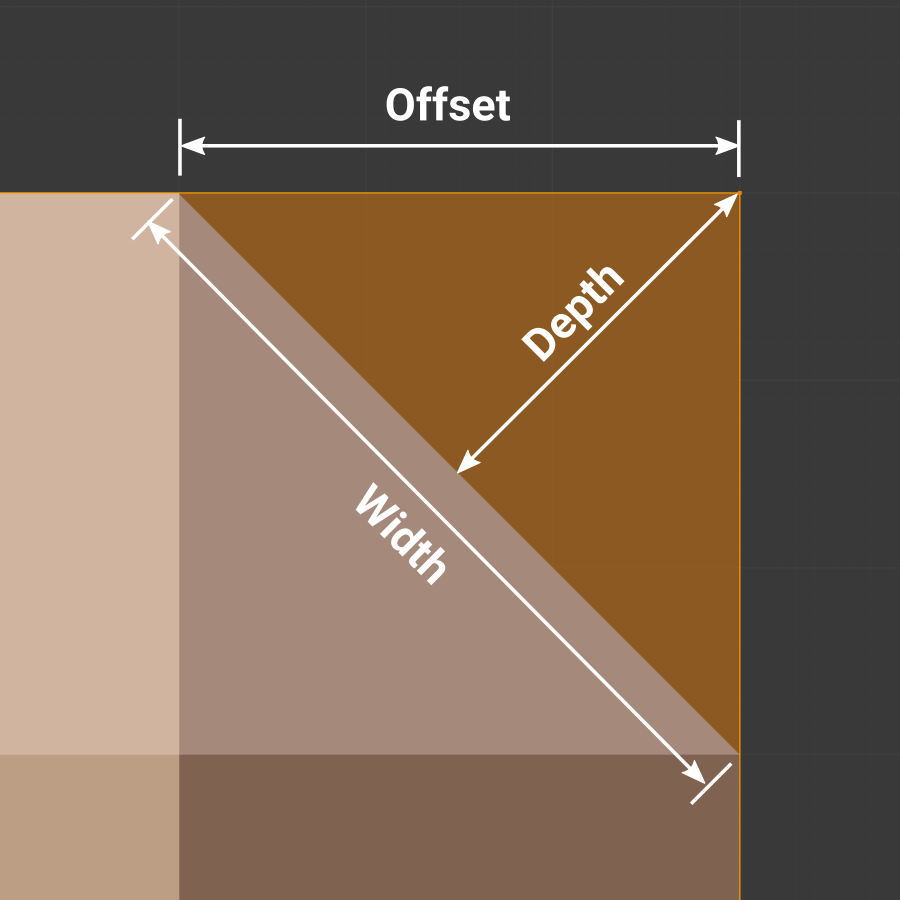

倒角修改器¶
The Bevel Modifier adds the ability to bevel the edges of the mesh it is applied to, allowing control of how and where the bevel is applied to the mesh.
The Bevel Modifier is a non-destructive alternative to the Bevel Operation in edit mode.

Not beveled. |

Beveled. |
The images above show the side views of a plain (not beveled) cube and a beveled one.
选项¶

Bevel Modifier panel.
- 宽度
倒角影响的尺寸，见下面的 宽度方法。

三个倒角宽度分别为 0.1、0.3 和 0.5 的立方体。
- 段
- 沿着倒角的面所添加边环的数量
- 外形
- The shape of the bevel, from concave to convex. It has no effect if Segments is less than 2.
- 材料
- The index of the material slot to use for the bevel. When set to -1, the material of the nearest original face will be used.
- 仅顶点
When enabled, only the areas near vertices are beveled; the edges are left not beveled.
Three cubes with 0.1, 0.3 and 0.5 bevel Widths, with Only Vertices option enabled.
- 夹钳重叠
- 启用该选项时，每个倒角棱的宽度会限制到满足棱不会相交。相距甚远的棱仍然会全宽度倒角，仅影响靠的太近的棱。
- Loop Slide
- If there are unbeveled edges along with beveled edges into a vertex, the bevel tries to slide along those edges when possible. Turning the option off can lead to more even bevel widths.
- 限制方法
用来控制倒角应用到网面哪里。
- 无
- 无限制，所有的棱将会倒角。
- 角度
- 邻接面构成的二面角小于定义的阈值的棱将会倒角。用来允许你仅对物体构成尖端的棱倒角，而不影响光滑的表面。
- 权重
- Use each edge's bevel weight to determine the width of the bevel. When the bevel weight is 0.0, no bevel is applied. See here about adjusting bevel weights.
- 顶点组
- Use weights from a vertex group to determine the width of the bevel. When the vertex weight is 0.0, no bevel is applied. An edge is only beveled if both of its vertices are in the vertex group. See here about adjusting vertex group weights.
- 宽度方法
Declares how Width will be interpreted to determine the amount of bevel.
Width methods.
- 偏移量
- Value is interpreted as the distance from the original edge to the edge of the beveled face.
- 宽度
- Value is interpreted as the distance between the two new edges formed by the bevel.
- 深度
- Value is the perpendicular distance from the new bevel face to original edge.
- 百分比
- Similar to Offset but the value is interpreted as a percentage of the adjacent edge length.
{kind=link}
{kind=link}